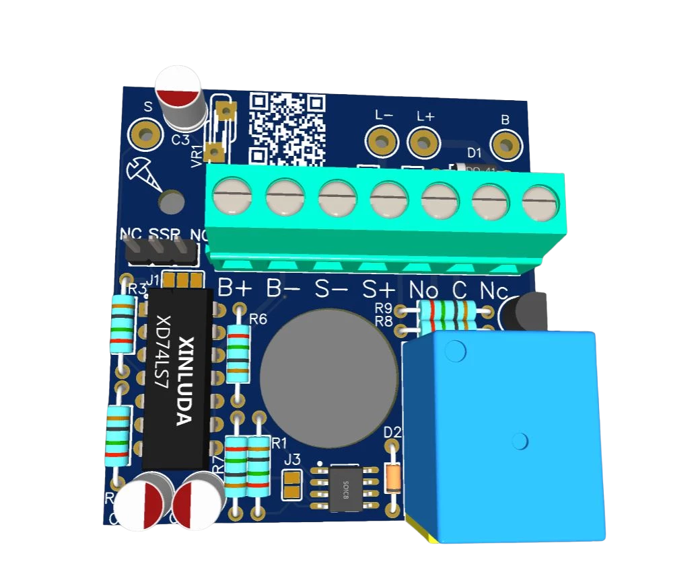

Felcsengetéskor vagy a külső csengőgomb megnyomásakor meghúzza a relét, aktiválja a kimenetet. Felhasználható okosotthon vezérlésre, automatizálásra, külső csengő áramkör kialakítására, folyosói világítás időzítés indítására, stb...
Teljes leírás és dokumentáció ide kattintva, videós segítség ide kattintva érhető el.